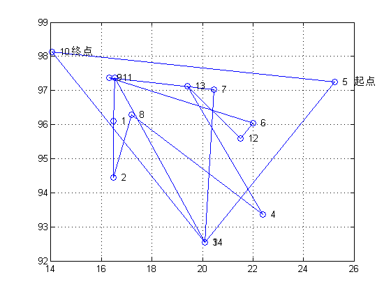
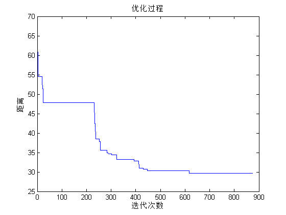
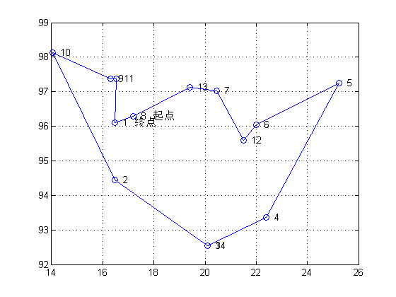

Contents
I. 清空环境变量
clear all
clc
II. 导入城市位置数据
X = [16.4700 96.1000
16.4700 94.4400
20.0900 92.5400
22.3900 93.3700
25.2300 97.2400
22.0000 96.0500
20.4700 97.0200
17.2000 96.2900
16.3000 97.3800
14.0500 98.1200
16.5300 97.3800
21.5200 95.5900
19.4100 97.1300
20.0900 92.5500];
III. 计算距离矩阵
D = Distance(X); %计算距离矩阵 N = size(D,1); %城市的个数
IV. 初始化参数
T0 = 1e10; % 初始温度 Tend = 1e-30; % 终止温度 L = 2; % 各温度下的迭代次数 q = 0.9; %降温速率 Time = ceil(double(solve([num2str(T0) '*(0.9)^x = ',num2str(Tend)]))); % 计算迭代的次数 % Time = 132; count = 0; %迭代计数 Obj = zeros(Time,1); %目标值矩阵初始化 track = zeros(Time,N); %每代的最优路线矩阵初始化
V. 随机产生一个初始路线
S1 = randperm(N); DrawPath(S1,X) disp('初始种群中的一个随机值:') OutputPath(S1); Rlength = PathLength(D,S1); disp(['总距离：',num2str(Rlength)]);
初始种群中的一个随机值: 5—>14—>11—>1—>2—>8—>4—>13—>12—>6—>9—>7—>3—>10—>5 总距离：65.8907
VI. 迭代优化
while T0 > Tend
count = count + 1; %更新迭代次数
temp = zeros(L,N+1);
1. 产生新解
S2 = NewAnswer(S1);
2. Metropolis法则判断是否接受新解
[S1,R] = Metropolis(S1,S2,D,T0); %Metropolis 抽样算法
3. 记录每次迭代过程的最优路线
if count == 1 || R < Obj(count-1) Obj(count) = R; %如果当前温度下最优路程小于上一路程则记录当前路程 else Obj(count) = Obj(count-1);%如果当前温度下最优路程大于上一路程则记录上一路程 end track(count,:) = S1; T0 = q * T0; %降温
end
VII. 优化过程迭代图
figure plot(1:count,Obj) xlabel('迭代次数') ylabel('距离') title('优化过程')
VIII. 绘制最优路径图
DrawPath(track(end,:),X)
IX. 输出最优解的路线和总距离
disp('最优解:') S = track(end,:); p = OutputPath(S); disp(['总距离：',num2str(PathLength(D,S))]);
最优解: 8—>13—>7—>12—>6—>5—>4—>3—>14—>2—>10—>9—>11—>1—>8 总距离：29.6889